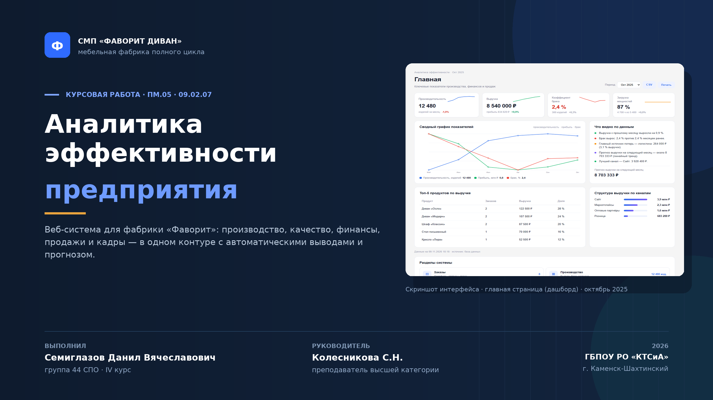
Приветствие и тема
Здравствуйте, уважаемые члены комиссии! Вашему вниманию представляется курсовая работа на тему «Аналитика эффективности предприятия ООО „Фаворит“». Работу выполнил студент группы 44 СПО Семиглазов Данил Вячеславович, руководитель — Колесникова Светлана Николаевна.
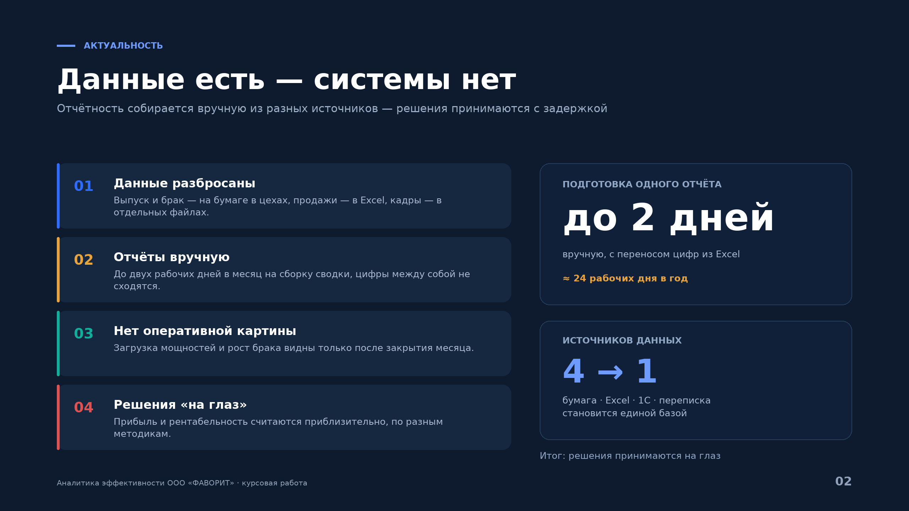
Актуальность
Мебельная фабрика «Фаворит» ежедневно получает много данных: выпуск изделий, брак, отработанные часы, выручка по каналам, фонд оплаты труда. Но эти данные разбросаны: цеха фиксируют выпуск на бумаге, продажи ведутся в Excel, кадры — в отдельных файлах. Из-за этого отчёт собирается вручную до двух рабочих дней в месяц, цифры между собой не сходятся, а руководство узнаёт о росте брака только после закрытия месяца. Отсюда и актуальность: нужен единый аналитический контур, где данные вводятся один раз, а показатели считаются автоматически.
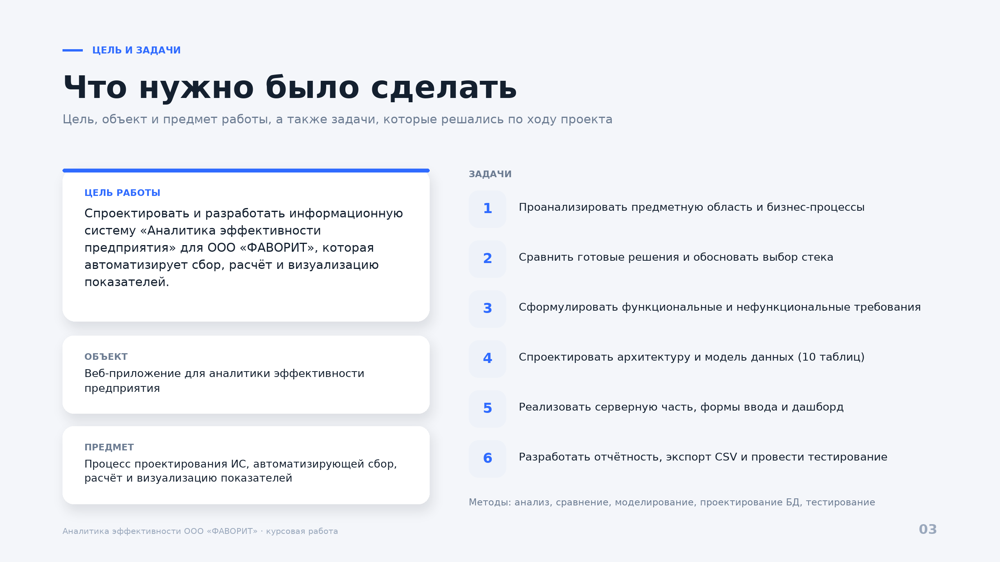
Цель и задачи
Цель работы — спроектировать и разработать информационную систему «Аналитика эффективности предприятия» для ООО «Фаворит», которая автоматизирует сбор, расчёт и визуализацию показателей. Объект разработки — веб-приложение для аналитики эффективности предприятия, предмет — процесс проектирования информационной системы. Для достижения цели решались шесть задач: анализ предметной области, сравнение готовых решений и обоснование стека, формулировка требований, проектирование архитектуры и базы данных, реализация серверной части и интерфейса, а также отчётность и тестирование. Все задачи решены, и это я покажу по ходу доклада.

Объект автоматизации
Фабрика «Фаворит» — производство полного цикла: заказ клиента, конструирование и раскрой, цеха мягкой и корпусной мебели, сборка и контроль, отгрузка. В ходе анализа выявлены типовые проблемы: бумажный учёт, отсутствие единого справочника цехов и категорий, разобщённость финансовых и производственных данных. Модель «как должно быть»: данные вводятся через веб-формы один раз, хранятся в базе, а показатели считаются SQL-запросами при открытии страницы. Пользователи системы — гость, сотрудник и администратор, у каждого свои права.

Обоснование выбора
Сравнивались четыре варианта: Excel, тяжёлая ERP на базе 1С, BI-платформы и заказное веб-приложение. Таблицы дают быстрый старт, но не дают разграничения прав и контроля ошибок; 1С избыточна и дорога для одного аналитического контура; BI-платформы требуют подготовленных данных и подписки. Поэтому выбрано заказное веб-приложение: PHP 8 с PDO, MySQL 8 с резервной SQLite, графики на SVG, без фреймворков и внешних библиотек — система разворачивается копированием папки и работает даже без интернета.
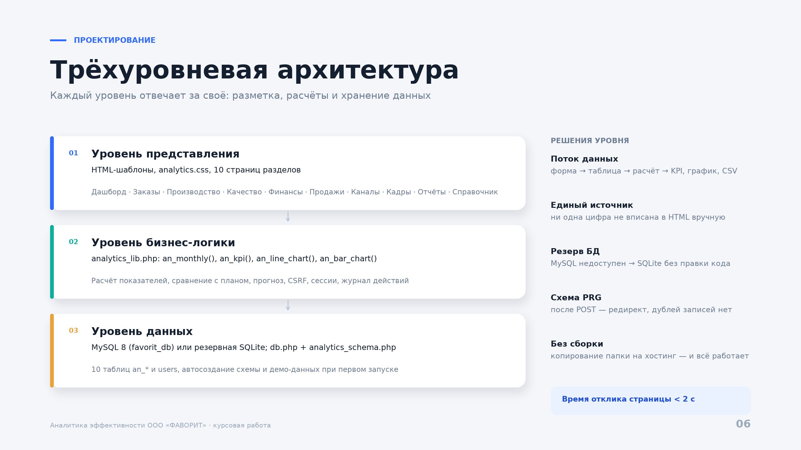
Архитектура
Система построена по трёхуровневой архитектуре. Уровень представления — HTML-шаблоны и таблица стилей, десять страниц разделов. Уровень бизнес-логики — модуль analytics_lib.php: там расчёт месячных рядов, коэффициентов, прогноза, а также защита форм. Уровень данных — MySQL или резервная SQLite; схема и демонстрационные данные создаются автоматически при первом запуске. Ключевой принцип: ни одна цифра не вписана в страницу вручную — всё считается из базы.
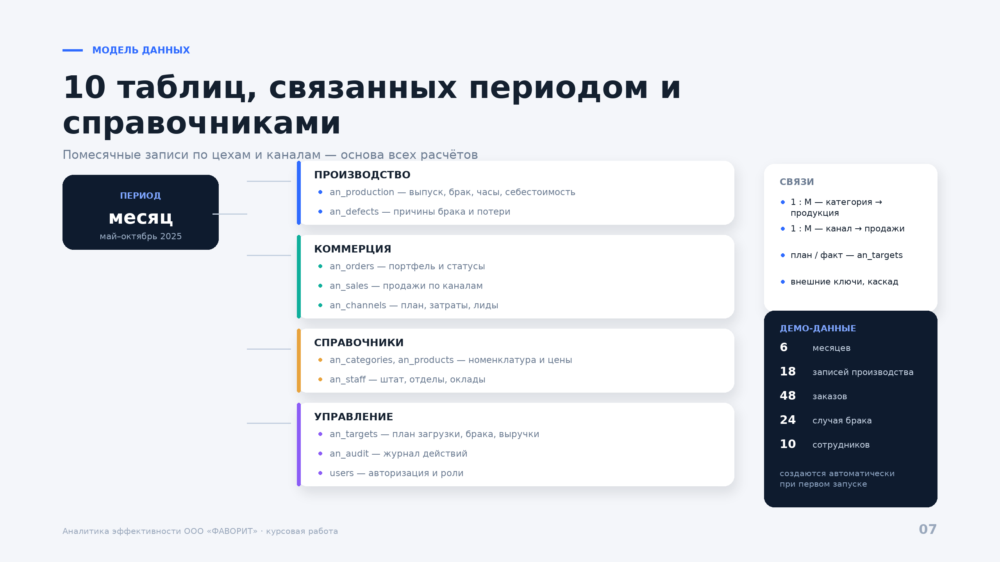
Модель данных
База данных включает десять основных таблиц. Производственный блок — выпуск, брак, часы и себестоимость по цехам; коммерческий — заказы, продажи по каналам и сами каналы; справочники — категории, продукция, сотрудники; и управленческий блок — плановые показатели, журнал действий и пользователи. Все помесячные записи связывает период, а справочники обеспечивают корректное сравнение периодов между собой.
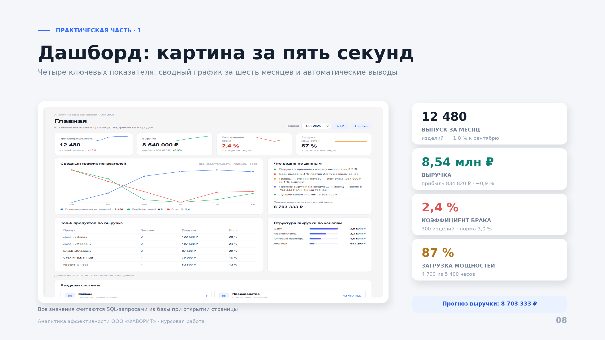
Дашборд
Главный экран — дашборд. Здесь четыре ключевых показателя: выпуск 12 480 изделий, выручка 8 миллионов 540 тысяч рублей, коэффициент брака 2,4 процента при норме 3 процента и загрузка мощностей 87 процентов. Ниже сводный график за шесть месяцев, топ-5 продуктов и структура выручки по каналам. Отдельный блок «Что видно по данным» система формирует сама: сравнивает месяц с предыдущим, находит главную причину потерь от брака, определяет лучший канал и строит прогноз выручки линейным трендом — на следующий месяц около 8 миллионов 700 тысяч рублей.
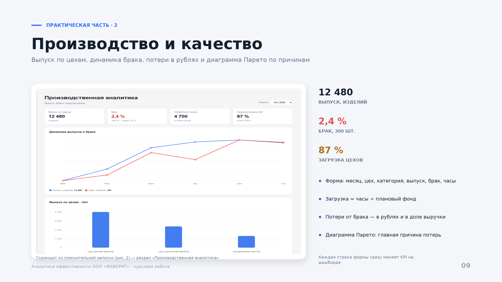
Производство и качество
В разделе «Производство» данные вводятся формой: месяц, цех, категория, выпуск, брак, часы и себестоимость. Система сразу считает загрузку как отношение отработанных часов к плановому фонду. В разделе «Качество» брак разложен по причинам и потерям в рублях, строится диаграмма Парето: главный источник потерь — логистика, 264 тысячи рублей, это 3,1 процента выручки.
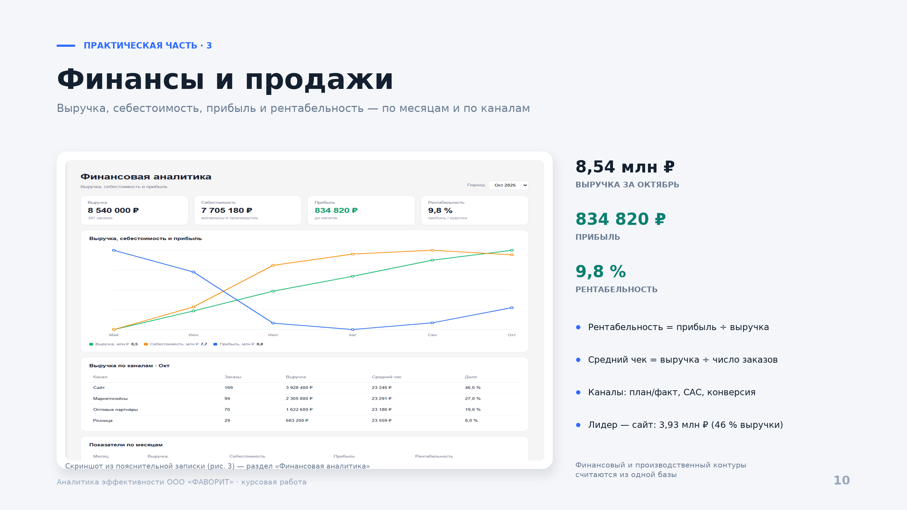
Финансы и продажи
Финансовый раздел показывает выручку, себестоимость, прибыль и рентабельность — в октябре прибыль 834 тысячи рублей, рентабельность 9,8 процента. Продажи считают средний чек и эффективность каналов: лидер — сайт, 46 процентов выручки. Важно, что финансовый и производственный контуры считаются из одной базы, поэтому прибыль и выпуск всегда согласованы.
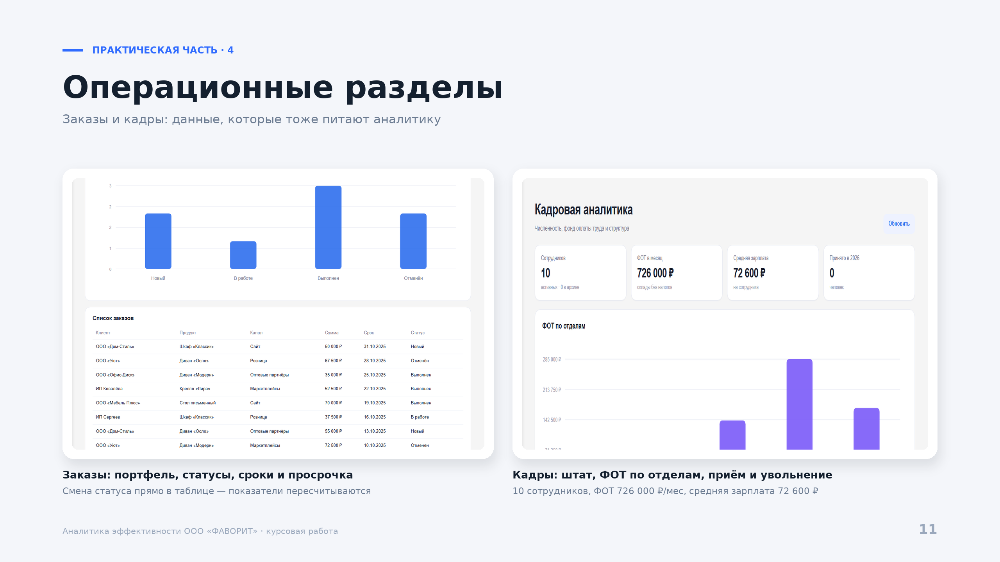
Операционные разделы
Операционные разделы — источник первичных данных. В заказах ведутся портфель, статусы, сроки и просрочка; статус меняется прямо в таблице. В кадрах — штат, фонд оплаты труда по отделам, приём и увольнение: десять сотрудников, фонд 726 тысяч рублей в месяц. Без этих разделов аналитике было бы нечего считать.
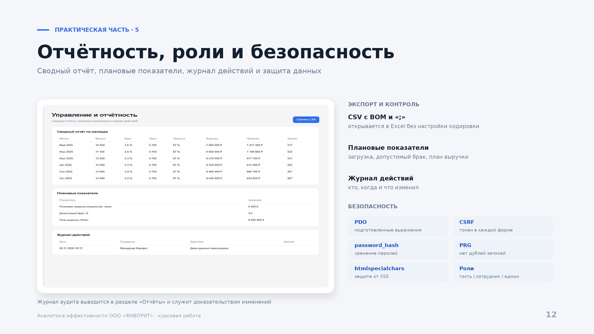
Отчётность и безопасность
Раздел «Отчёты» формирует сводную таблицу по месяцам, позволяет менять плановые показатели и выгружать данные в CSV — файл открывается в Excel без настройки кодировки. Там же журнал действий: кто, когда и что изменил. По безопасности: все запросы идут через подготовленные выражения PDO, формы защищены CSRF-токенами, пароли хранятся через password_hash, вывод экранируется, а после отправки формы применяется схема «отправил — перенаправил — показал», поэтому дублей записей не возникает.
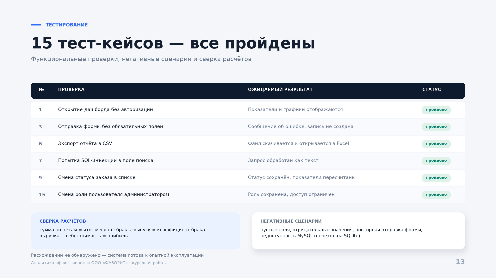
Тестирование
Тестирование проводилось по пятнадцати тест-кейсам: функциональные проверки, негативные сценарии и сверка расчётов. Проверялись пустые поля, отрицательные значения, повторная отправка формы, попытка SQL-инъекции и работа при недоступной MySQL — система переходит на SQLite. Отдельно сверяли цифры: сумма по цехам совпадает с итогом месяца, брак делится на выпуск, прибыль равна выручке минус себестоимость. Все тесты пройдены, расхождений нет.
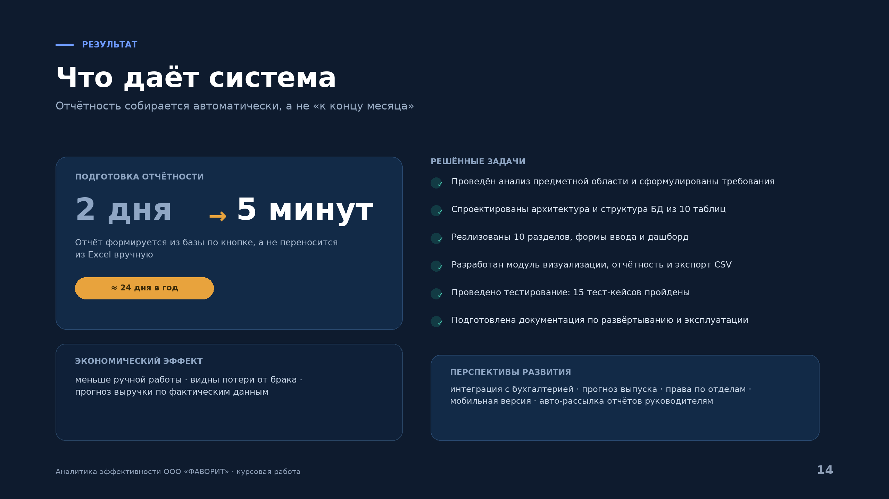
Результат
Итог: время подготовки отчётности сократилось с двух рабочих дней до нескольких минут — это около 24 рабочих дней в год. Брак и потери видны сразу, а не после закрытия месяца, появился прогноз выручки по фактическим данным. Все задачи, поставленные во введении, решены. В перспективе — интеграция с бухгалтерией, прогноз выпуска, права по отделам и автоматическая рассылка отчётов руководителям.
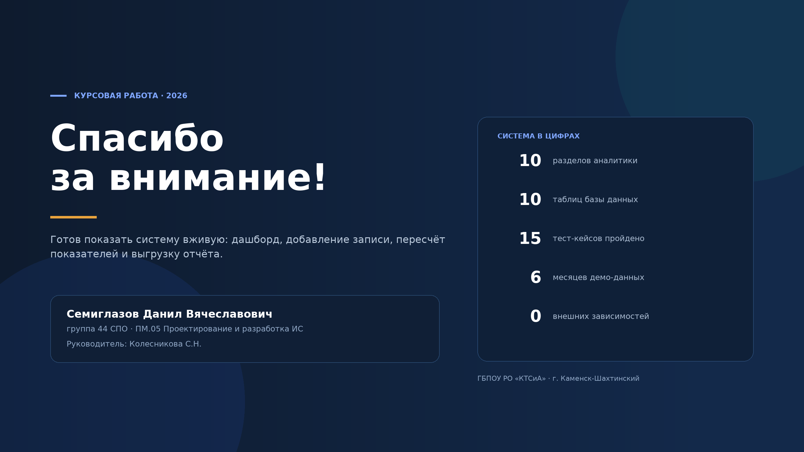
Завершение
Доклад окончен. Спасибо за внимание! Готов ответить на ваши вопросы и показать систему вживую: дашборд, добавление записи, пересчёт показателей и выгрузку отчёта.
Вероятные вопросы комиссии
Где хранятся данные и какая структура базы?
Реляционная база: MySQL 8 (основной режим, база favorit_db) или SQLite как резервный вариант. Десять основных таблиц an_production, an_sales, an_orders, an_defects, an_channels, an_staff, an_categories, an_products, an_targets, an_audit плюс таблица users. Связи — через справочники и период; схема создаётся автоматически при первом запуске.
Как данные попадают в аналитику?
Цепочка: форма в разделе → запись в таблицу → расчёт в analytics_lib.php → KPI, графики, отчёты, CSV и журнал действий. Пример: добавили заказ на 55 000 рублей — на дашборде изменились сумма портфеля и средний чек.
Что произойдёт, если MySQL недоступен?
db.php перехватывает исключение и переключается на SQLite: файл data/favorit.sqlite, схема и демо-данные создаются автоматически. Поэтому систему можно показать на любом компьютере без настройки сервера.
Почему PHP, а не фреймворк?
Учебный проект с собственной аналитикой: PHP и PDO дают полный контроль над запросами, не требуют сборки и зависимостей, разворачиваются на любом хостинге и в OpenServer. Для задачи из десяти разделов фреймворк дал бы лишний слой без выгоды.
Как обеспечена безопасность?
Подготовленные выражения PDO — защита от SQL-инъекций, CSRF-токены во всех формах, password_hash для паролей, экранирование вывода (XSS), проверка сессии и роли, схема PRG против повторной отправки, журнал действий an_audit для контроля изменений.
Как проверяли правильность расчётов?
Сверкой: сумма выпуска по цехам равна итогу месяца, брак делённый на выпуск даёт коэффициент брака, выручка минус себестоимость равна прибыли, план/факт по каналам сходится с продажами. Плюс пятнадцать тест-кейсов, включая негативные сценарии.
Как добавить новый показатель?
Добавить поле в таблицу → вывести форму ввода в разделе → дописать расчёт в analytics_lib.php (например, в функцию an_kpi) → вывести карточку на дашборде. Пересчёт происходит автоматически при открытии страницы.
Почему цифры на слайдах совпадают с демонстрацией?
В системе есть демонстрационные данные за май–октябрь 2025 года, подобранные под контрольные значения: 12 480 изделий, 8 540 000 рублей, 2,4 процента брака, 87 процентов загрузки. Их можно изменить через формы — тогда изменятся и KPI.
Какие роли есть в системе и чем они различаются?
Гость — только просмотр дашборда и разделов. Сотрудник — добавление, редактирование и удаление записей, смена статусов, плановые показатели. Администратор — всё то же плюс управление пользователями, ролями и резервное копирование базы.
Как вы оценили экономический эффект?
По времени подготовки отчётности: вручную это до двух рабочих дней в месяц, в системе — несколько минут. За год это около 24 рабочих дней, которые высвобождаются для других задач; плюс снижаются потери от несвоевременного выявления брака.
Есть ли у системы перспективы развития?
Интеграция с бухгалтерской системой предприятия, прогнозирование выпуска на основе исторических данных, разграничение прав по отделам, мобильная версия и автоматическая рассылка отчётов руководителям.